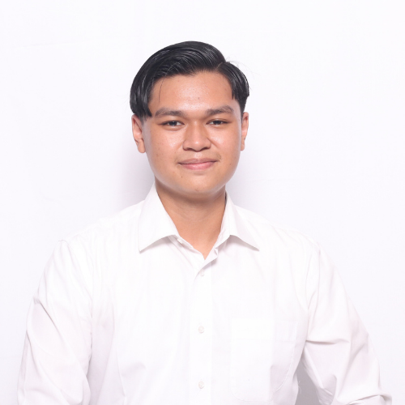

Alvito Rafky Sumeri
About Me
I build software that solve user problems
Saya adalah mahasiswa aktif semester 6 di Telkom University, Jakarta Campus, jurusan Sistem Informasi. Saya memiliki minat yang kuat dalam pengembangan aplikasi berbasis web dan desain antarmuka pengguna yang modern. Selama perjalanan akademik dan proyek pribadi saya, saya telah mengerjakan berbagai aplikasi dan website yang tidak hanya fungsional, tetapi juga dirancang dengan memperhatikan pengalaman pengguna.
Saya percaya bahwa teknologi bukan sekadar alat, melainkan sarana untuk menciptakan solusi yang berdampak dan inklusif. Dengan kombinasi kemampuan teknis di bidang pemrograman dan sensitivitas terhadap desain UI/UX, saya terus berupaya menciptakan produk digital yang efektif dan estetis.
Saya aktif mengembangkan portofolio melalui berbagai proyek seperti website edukasi kesehatan, sistem marketplace terintegrasi API, serta mockup desain antarmuka berbasis Figma. Semangat belajar, keingintahuan tinggi, dan kemauan untuk terus berkembang adalah nilai yang saya pegang dalam setiap karya yang saya bangun.
Saya percaya bahwa teknologi bukan sekadar alat, melainkan sarana untuk menciptakan solusi yang berdampak dan inklusif. Dengan kombinasi kemampuan teknis di bidang pemrograman dan sensitivitas terhadap desain UI/UX, saya terus berupaya menciptakan produk digital yang efektif dan estetis.
Saya aktif mengembangkan portofolio melalui berbagai proyek seperti website edukasi kesehatan, sistem marketplace terintegrasi API, serta mockup desain antarmuka berbasis Figma. Semangat belajar, keingintahuan tinggi, dan kemauan untuk terus berkembang adalah nilai yang saya pegang dalam setiap karya yang saya bangun.
Lokasi: Jakarta, Indonesia
Email: alvitorafky44@gmail.com
Pendidikan: S1 Sistem Informasi, Telkom University
Minat: Web Development, UI/UX, Startup, Teknologi, Figma
Skills
Education
S1 Sistem Informasi (2022 - sekarang)
Telkom University, Jakarta
SMA IPA (2019 - 2022)
SMA Negeri 22 Jakarta